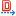
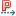

The following table describes the elements that you can add to State diagrams. The elements are grouped by Modeling Palette section.
| Element | Icon | Description |
|---|---|---|
| Basic Section | ||
| Simple State | |
A condition or situation during the lifecycle of an object during which it satisfies some condition, performs some activity, or waits for some event. |
| State Transition | A relationship between two states. | |
| Initial State | A special kind of state signifying the source for a single transition to the default state of the composite state. | |
| Final State | |
A special kind of state signifying that the enclosing region is completed. |
| Aborted Final State | |
The result of the firing of an outgoing transition before the completion of the activity. |
| Vertical Join/Merge | |
A vertical control node that splits a flow into multiple concurrent flows. |
| Horizontal Join/Merge | |
A horizontal control node that splits a flow into multiple concurrent flows. |
| Composite State | |
A state that consists of either concurrent substates or sequential substates. |
| Choice Pseudo State | An abstraction that encompasses different types of transient vertices in the state machine graph. | |
| Shallow History State | |
A pseudostate representing the most recent active substate of its containing state. |
| Deep History State | |
A pseudostate representing the most recent active configuration of the state. |
| Entry Point State | A pseudostate in which an entry point of a composite state represented by a StateMachine. | |
| Junction State | |
A pseudostate in which the vertices are semantic-free vertices that are used to chain together multiple transitions. They are used to construct compound transition paths between states. |
| Submachine State | |
A state machine which is equivalent to a composite state but its contents is described by another state machine. |
| Dependencies Section | ||
| Dependency |  | The relationship between two elements whose definitions depend on one another in such a way that changes to one can result in changes to the other. For example, when one class mentions another as an operation parameter, or as part of its data, the two classes exhibit dependency. |
| Realize | |
A semantic relationship between classifiers - one classifier specifies a contract that another classifier guarantees to carry out. These relationships are used in two places: between interfaces and the classes that realize them, and between use cases and the collaboration that realize them. |
| Usage | |
A dependency in which one element (the client) requires the presence of another element (the supplier) for its correct functioning or implementation. |
| Permission |  | A dependency that signifies granting of access rights from the supplier model element to a client model element, in which the client requires access to some or all of the constituent elements of the supplier. |
| Abstraction | |
A boundary relative to the perspective of the viewer. The essential characteristics of an entity that distinguish it from all other kinds of entities. |
| Comments Section | ||
| Comment | |
A Notepad notation. Use Comments to record information for a element or link in a diagram. This information is not included in generated code but is for information only. Each Comment can contain unlimited text, and can be numbered. You can also define a stereotype, and enter a noted element. |
| Link Comment | |
The connection between the comment element and the associated element. |